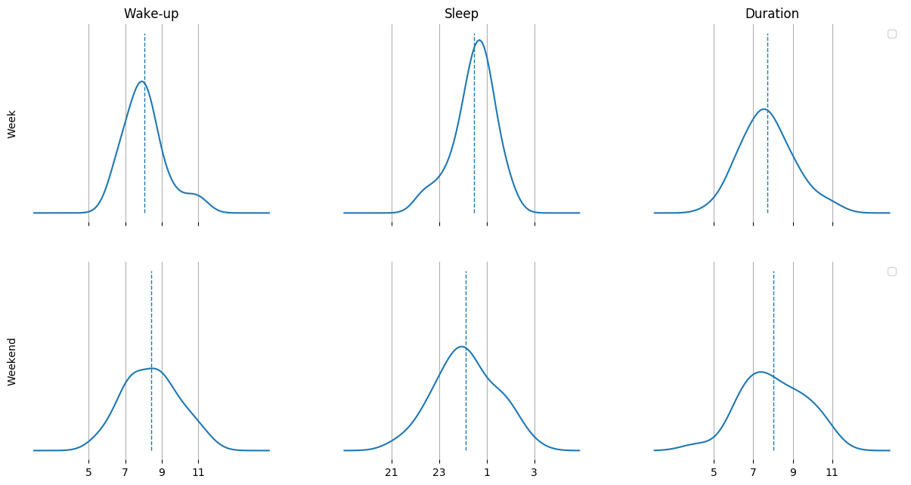

Most recent sleep distribution

This plot shows the distributions for the wake-up and sleep times, and the sleep-duration for the most recent 100 days.
Split up in days
The same data as above (the most recent 100 days) is split up into weekdays.
Evolution of sleeping time over the dataset
Here, the data of the whole time is shown together with a trendline to help identify changes in sleep-behaviour that might be interesting to look at more closely.
Comparing the specified time-slices
We first compare the different timeslices all together on a weekend vs. weekday basis.
Day-level plots for each timeslice
In the following, all timeslices are split up into days to have a closer look at.


Data overview
All datapoints
The computed sleep-durations between the sleep-and wakeup indicators.